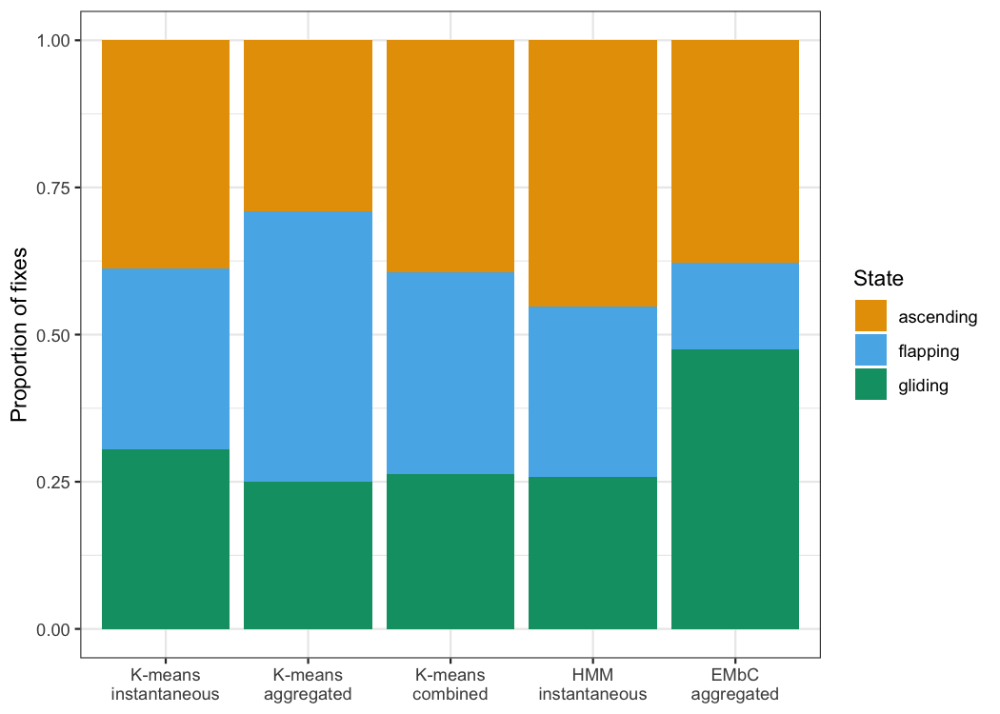
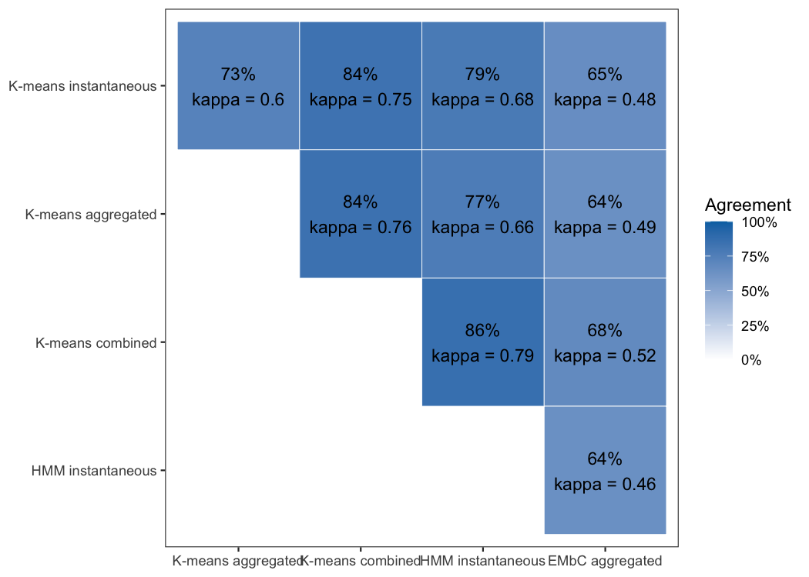
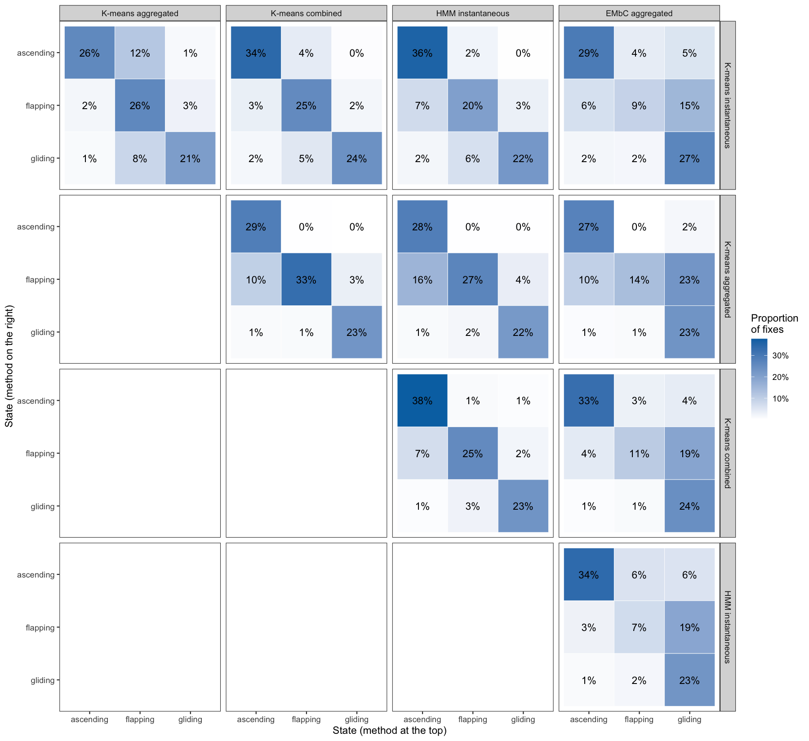
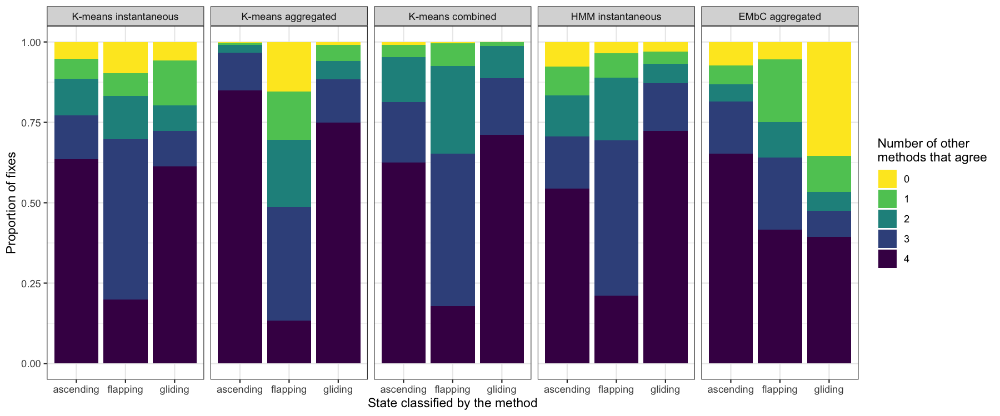
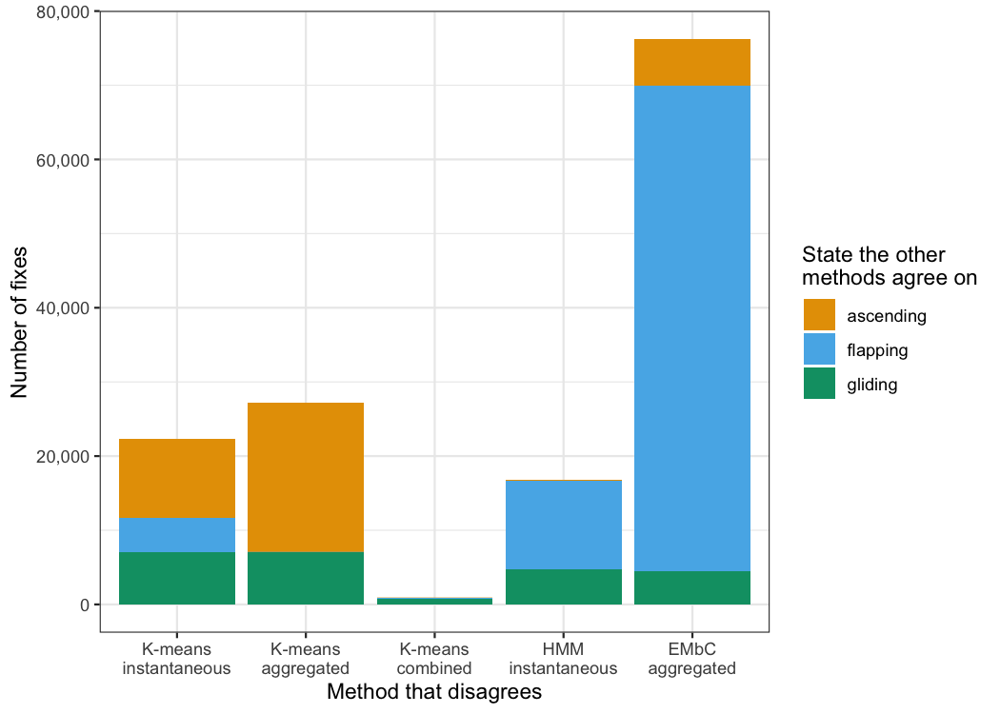
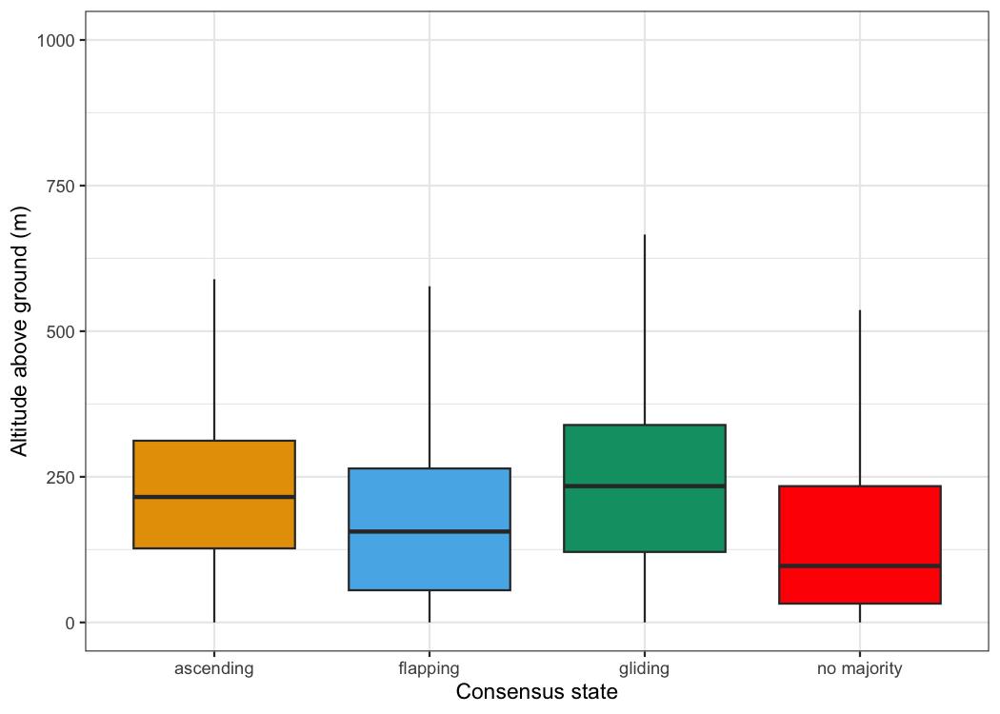
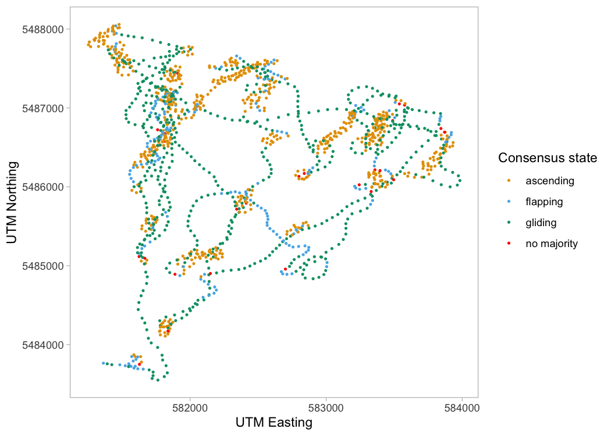
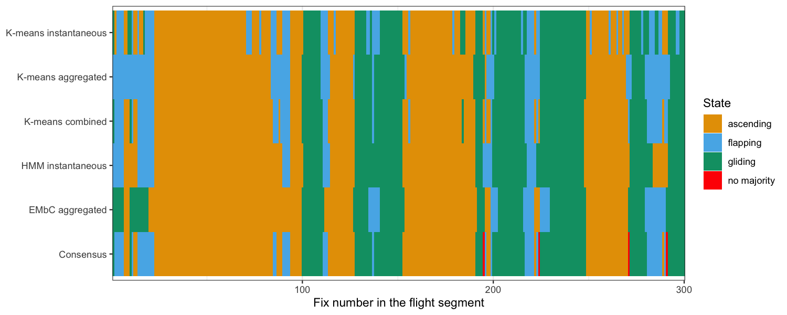

Wedge-tailed eagle behavioural classification
Agreement between methods
![]()
Compare the state classifications based on k-means with different input variables, hidden Markov models (HMMs), and expectation-maximisation binary clustering (EMbC).
Load packages
Import data from the model outputs
Show code
kmeans_instantaneous <- read_csv("outputs/eagle_states_kmeans_instantaneous_Stella.csv")
kmeans_aggregated <- read_csv("outputs/eagle_states_kmeans_aggregated_Stella.csv")
kmeans_combined <- read_csv("outputs/eagle_states_kmeans_combined_Stella.csv")
hmm <- read_csv("outputs/eagle_states_hmm_Stella.csv")
embc <- read_csv("outputs/eagle_states_embc_aggregated_Stella.csv")Join the dataframes
The dataframes have different numbers of rows, as some variables had NAs in some of the scripts but not others. We join them by the eagle’s name and the start time of each step, and then only keep the fixes that were classified by all five methods.
We keep the location and flight variables from the k-means combined data, and only the 3-state classifications from the others (plus the probability of the most likely state from the 3-state HMM). For EMbC we use the smoothed behaviours (the behavior column), which are already labelled in the EMbC script.
Show code
Show code
eagle_states <- kmeans_combined %>%
select(name, stepstart_dtime, stepend_dtime,
stepend_utme, stepend_utmn,
flight_n, lat, lon,
F_AOG, F_Sn, F_Vrate, F_radians, F_radians_abs,
F_turn_cum_window, F_speed_mean_window, F_Vrate_mean_window,
kmeans_comb = k3) %>%
full_join(kmeans_aggregated %>% select(name, stepstart_dtime, kmeans_agg = k3),
by = c("name", "stepstart_dtime")) %>%
full_join(kmeans_instantaneous %>% select(name, stepstart_dtime, kmeans_inst = k3),
by = c("name", "stepstart_dtime")) %>%
full_join(hmm %>% select(name, stepstart_dtime, hmm = hmm3, hmm3_prob),
by = c("name", "stepstart_dtime")) %>%
full_join(embc %>% select(name, stepstart_dtime, embc = behavior),
by = c("name", "stepstart_dtime"))
# number of rows after joining
nrow(eagle_states)[1] 504807Show code
[1] 504781Label the states
The cluster (k-means) and state (HMM) numbers are arbitrary, so state 1 in one method isn’t necessarily state 1 in another. Here we assign the same behaviour labels that were given to the 3-state models in each of the classification scripts.
Note that these need to match the labels in the classification scripts - if the models are re-run and the numbers change, update them here as well. The EMbC behaviours are already labelled, so they don’t need to be changed here.
Show code
# the names of the state columns, and labels to use in the plots
state_cols <- c("kmeans_inst", "kmeans_agg", "kmeans_comb", "hmm", "embc")
method_labels <- c(kmeans_inst = "K-means instantaneous",
kmeans_agg = "K-means aggregated",
kmeans_comb = "K-means combined",
hmm = "HMM instantaneous",
embc = "EMbC aggregated")
# colours that are used in all of the plots and the map
state_colours <- c(ascending = "#E69F00", flapping = "#56B4E9", gliding = "#009E73")
# the consensus state can also be 'no majority' (when fewer than 3 methods agree)
# consensus_colours <- c(state_colours, "no majority" = "#999999")
consensus_colours <- c(state_colours, "no majority" = "red")
agreement_colours <- c("all 5 agree" = "#0072B2",
"4 of 5 agree" = "#56B4E9",
"3 of 5 agree" = "#F0E442",
"no majority" = "#D55E00")
# the labels from each classification script
eagle_states <- eagle_states %>%
mutate(
kmeans_inst = case_when(kmeans_inst == 1 ~ "ascending",
kmeans_inst == 2 ~ "gliding",
kmeans_inst == 3 ~ "flapping"),
# cluster 2 has a positive mean vertical rate and high cumulative turning
# (ascending), and cluster 3 a negative vertical rate (gliding)
kmeans_agg = case_when(kmeans_agg == 1 ~ "flapping",
kmeans_agg == 2 ~ "ascending",
kmeans_agg == 3 ~ "gliding"),
kmeans_comb = case_when(kmeans_comb == 1 ~ "gliding",
kmeans_comb == 2 ~ "flapping",
kmeans_comb == 3 ~ "ascending"),
hmm = case_when(hmm == 1 ~ "gliding",
hmm == 2 ~ "flapping",
hmm == 3 ~ "ascending")
) %>%
# use the same factor levels for every method (so the colours are consistent)
mutate(across(all_of(state_cols), \(x) factor(x, levels = names(state_colours))))Calculate the agreement between the methods
For each fix we count how many of the five methods classified it as each state. From this we get:
n_agree- the number of methods that agree on the most common state (2, 3, 4 or 5)agreement- whether all 5 methods agree, 4 of the 5 agree, 3 of the 5 agree, or there is no majority (a 2-2-1 split)consensus- the state that at least 3 of the 5 methods agree on (otherwise ‘no majority’)odd_one_out- when 4 of the 5 methods agree, the method that disagrees
Show code
eagle_states <- eagle_states %>%
mutate(
# the number of methods that classified each fix as each state
n_ascending = rowSums(across(all_of(state_cols), \(x) x == "ascending")),
n_flapping = rowSums(across(all_of(state_cols), \(x) x == "flapping")),
n_gliding = rowSums(across(all_of(state_cols), \(x) x == "gliding")),
# the number of methods that agree on the most common state
n_agree = pmax(n_ascending, n_flapping, n_gliding),
agreement = case_when(n_agree == 5 ~ "all 5 agree",
n_agree == 4 ~ "4 of 5 agree",
n_agree == 3 ~ "3 of 5 agree",
n_agree == 2 ~ "no majority"),
# the state that at least 3 of the 5 methods agree on (only one state can
# have a majority, as 3 + 3 > 5)
consensus = case_when(n_ascending >= 3 ~ "ascending",
n_flapping >= 3 ~ "flapping",
n_gliding >= 3 ~ "gliding",
TRUE ~ "no majority"),
# when 4 of the 5 methods agree, which method disagrees?
odd_one_out = case_when(n_agree != 4 ~ NA,
kmeans_inst != consensus ~ method_labels["kmeans_inst"],
kmeans_agg != consensus ~ method_labels["kmeans_agg"],
kmeans_comb != consensus ~ method_labels["kmeans_comb"],
hmm != consensus ~ method_labels["hmm"],
embc != consensus ~ method_labels["embc"])
) %>%
# set the order of the levels for plotting
mutate(agreement = factor(agreement, levels = names(agreement_colours)),
consensus = factor(consensus, levels = names(consensus_colours)),
odd_one_out = factor(odd_one_out, levels = method_labels))We also create a ‘long’ version of the data, with one row for each fix and method, which is easier to plot.
Show code
eagle_states_long <- eagle_states %>%
select(stepstart_dtime, all_of(state_cols), n_ascending, n_flapping, n_gliding) %>%
pivot_longer(all_of(state_cols), names_to = "method", values_to = "state") %>%
mutate(method = factor(method_labels[method], levels = method_labels),
# how many of the OTHER four methods agree with this method's state
n_others_agree = case_when(state == "ascending" ~ n_ascending - 1,
state == "flapping" ~ n_flapping - 1,
state == "gliding" ~ n_gliding - 1))State proportions for each method
Before looking at agreement at each fix, how often does each method classify each state overall?
Show code
ggplot(eagle_states_long, aes(x = method, fill = state)) +
geom_bar(position = "fill") +
scale_fill_manual(values = state_colours) +
# wrap the method names so they don't overlap
scale_x_discrete(labels = scales::label_wrap(12)) +
labs(x = NULL, y = "Proportion of fixes", fill = "State") +
theme_bw()
Pairwise agreement
Agreement between each pair of methods
The percentage of fixes where each pair of methods classified the same state, and Cohen’s kappa, which accounts for the agreement that would be expected by chance given how often each method classifies each state (1 = perfect agreement, 0 = no better than chance).
Show code
# all pairs of methods
method_pairs <- combn(state_cols, 2, simplify = FALSE)
pairwise_agreement <- map(method_pairs, \(pair) {
state_a <- eagle_states[[pair[1]]]
state_b <- eagle_states[[pair[2]]]
# proportion of fixes where both methods classified the same state
p_observed <- mean(state_a == state_b)
# agreement expected by chance, from the proportions of each state in each method
p_chance <- sum(prop.table(table(state_a)) * prop.table(table(state_b)))
tibble(method_a = method_labels[pair[1]],
method_b = method_labels[pair[2]],
agreement = p_observed,
kappa = (p_observed - p_chance) / (1 - p_chance))
}) %>%
bind_rows() %>%
mutate(method_a = factor(method_a, levels = method_labels),
method_b = factor(method_b, levels = method_labels))
pairwise_agreementShow code
ggplot(pairwise_agreement, aes(x = method_b, y = method_a, fill = agreement)) +
geom_tile(colour = "white") +
geom_text(aes(label = paste0(round(agreement * 100), "%\nkappa = ", round(kappa, 2)))) +
scale_fill_gradient(low = "white", high = "#0072B2", limits = c(0, 1),
labels = scales::percent) +
# put the first method at the top
scale_y_discrete(limits = rev) +
labs(x = NULL, y = NULL, fill = "Agreement") +
theme_bw() +
theme(panel.grid = element_blank())
Cross-tabulation of the states for each pair of methods
The proportion of all fixes with each combination of states, for each pair of methods. The rows are the states from the method on the right and the columns are the states from the method at the top. The diagonal (top left to bottom right) is where the two methods agree, and the off-diagonals show which states are confused with each other.
Show code
pairwise_tables <- map(method_pairs, \(pair) {
eagle_states %>%
count(state_a = .data[[pair[1]]], state_b = .data[[pair[2]]]) %>%
mutate(prop = n / sum(n),
method_a = method_labels[pair[1]],
method_b = method_labels[pair[2]])
}) %>%
bind_rows() %>%
mutate(method_a = factor(method_a, levels = method_labels),
method_b = factor(method_b, levels = method_labels))
ggplot(pairwise_tables, aes(x = state_b, y = state_a, fill = prop)) +
geom_tile(colour = "white") +
geom_text(aes(label = scales::percent(prop, accuracy = 1))) +
scale_fill_gradient(low = "white", high = "#0072B2", labels = scales::percent) +
# put ascending at the top so the diagonal is where the methods agree
scale_y_discrete(limits = rev) +
facet_grid(method_a ~ method_b) +
labs(x = "State (method at the top)", y = "State (method on the right)",
fill = "Proportion\nof fixes") +
theme_bw() +
theme(panel.grid = element_blank())
Agreement between all five methods
How often do the methods agree?
The bars are coloured by the consensus state (the state that at least 3 of the 5 methods agree on).
Show code
Show code

Agreement for each method and state
When a method classifies a fix as a particular state, how many of the other four methods agree with it? States that have lots of 4s (dark) are consistently identified, regardless of the method.
Show code
ggplot(eagle_states_long, aes(x = state, fill = factor(n_others_agree))) +
geom_bar(position = "fill") +
scale_fill_viridis_d(direction = -1) +
facet_wrap(~ method, nrow = 1) +
labs(x = "State classified by the method", y = "Proportion of fixes",
fill = "Number of other\nmethods that agree") +
theme_bw()
Which method is the odd one out?
When 4 of the 5 methods agree, which method disagrees? The bars are coloured by the state that the other four methods agreed on.
Show code
eagle_states %>%
filter(n_agree == 4) %>%
ggplot(aes(x = odd_one_out, fill = consensus)) +
geom_bar() +
scale_fill_manual(values = consensus_colours) +
# wrap the method names so they don't overlap
scale_x_discrete(labels = scales::label_wrap(12)) +
scale_y_continuous(labels = scales::comma) +
labs(x = "Method that disagrees", y = "Number of fixes",
fill = "State the other\nmethods agree on") +
theme_bw()
What do the fixes with no majority look like?
The flight variables for each consensus state. Fixes with no majority are those where the methods disagree, and are likely to be in between the other behaviours (or at transitions between them). We remove outliers for clarity and faster plotting.
Show code



Show code
ggplot(eagle_states, aes(x = consensus, y = F_Vrate, fill = consensus)) +
geom_boxplot(outlier.shape = NA) +
geom_hline(yintercept = 0, linetype = 2) +
scale_fill_manual(values = consensus_colours) +
coord_cartesian(ylim = c(-5, 5)) +
labs(x = "Consensus state", y = "Vertical rate (m/s)") +
theme_bw() +
theme(legend.position = "none")
Agreement and the certainty of the HMM
The HMM gives the probability of the most likely state at each fix (hmm3_prob). Do the methods disagree more where the HMM is less certain?
Show code
ggplot(eagle_states, aes(x = agreement, y = hmm3_prob, fill = agreement)) +
geom_boxplot(outlier.shape = NA) +
scale_fill_manual(values = agreement_colours) +
scale_y_continuous(breaks = seq(0,1,0.1)) +
labs(x = NULL, y = "Probability of the most likely HMM state") +
theme_bw() +
theme(legend.position = "none")
Agreement through a flight segment
Choose a flight segment to explore, and look at the states from each method through time, along with the flight variables. The segment is chosen to be the one closest to n fixes, but you can change it to any other flight segment by changing flight_n_explore below.
Show code
flight_length <- 1500 # in number of locations
# choose a flight segment - here the one closest to n locations
# (replace flight_n_explore with any other flight_n to explore a different flight)
flight_counts <- eagle_states %>% count(flight_n)
flight_n_explore <- flight_counts$flight_n[which.min(abs(flight_counts$n - flight_length))]
segment_explore <- eagle_states %>%
filter(flight_n == flight_n_explore) %>%
arrange(stepend_dtime) %>%
# number the fixes in the segment
mutate(fix = row_number())2D plot (x-y)
Show code
ggplot(data = segment_explore,
aes(x = stepend_utme, y = stepend_utmn)) +
geom_point(aes(col = as.factor(consensus)),size=.5) +
scale_colour_manual(values = consensus_colours) +
labs(x = "UTM Easting", y = "UTM Northing", col = "Consensus state") +
theme_light() +
theme(panel.grid.major = element_blank(), panel.grid.minor = element_blank())
Through time plots (x-time)
Show code
# calculate the time in seconds from the first point in the segment
segment_explore$seconds = segment_explore$stepend_dtime - segment_explore[[1,3]]
ggplot(data = segment_explore,
aes(x = seconds, y = F_AOG)) +
geom_point(aes(col = consensus),size=.5) +
scale_colour_manual(values = consensus_colours) +
labs(x = "Seconds in segment", y = "Altitude above ground (m)", col = "Consensus state") +
theme_light() +
theme(panel.grid.major = element_blank(), panel.grid.minor = element_blank())
Show code
ggplot(data = segment_explore,
aes(x = seconds, y = F_Sn)) +
geom_line(aes(x=seconds, y=F_Sn), color = "grey") +
geom_point(aes(col = as.factor(consensus)),size=.5) +
scale_colour_manual(values = consensus_colours) +
labs(x = "Seconds in segment", y = "Speed (m/s)", col = "Consensus state") +
theme_light() +
theme(panel.grid.major = element_blank(), panel.grid.minor = element_blank())
Show code
ggplot(data = segment_explore,
aes(x = seconds, y = F_speed_mean_window)) +
geom_line(aes(x=seconds, y=F_speed_mean_window), color = "grey") +
geom_point(aes(col = as.factor(consensus)),size=.5) +
scale_colour_manual(values = consensus_colours) +
labs(x = "Seconds in segment", y = "Average speed for local window (m/s)", col = "Consensus state") +
theme_light() +
theme(panel.grid.major = element_blank(), panel.grid.minor = element_blank())
Show code
ggplot(data = segment_explore,
aes(x = seconds, y = F_Vrate)) +
geom_hline(aes(yintercept=0), linetype="dashed") +
geom_line(aes(x=seconds, y=F_Vrate), color = "grey") +
geom_point(aes(col = as.factor(consensus)),size=.5) +
scale_colour_manual(values = consensus_colours) +
labs(x = "Seconds in segment", y = "Vertical rate (m/s)", col = "Consensus state") +
theme_light() +
theme(panel.grid.major = element_blank(), panel.grid.minor = element_blank())
Show code
ggplot(data = segment_explore,
aes(x = seconds, y = F_Vrate_mean_window)) +
geom_hline(aes(yintercept=0), linetype="dashed") +
geom_line(aes(x=seconds, y=F_Vrate_mean_window), color = "grey") +
geom_point(aes(col = as.factor(consensus)),size=.5) +
scale_colour_manual(values = consensus_colours) +
labs(x = "Seconds in segment", y = "Average vertical rate for local window (m/s)", col = "Consensus state") +
theme_light() +
theme(panel.grid.major = element_blank(), panel.grid.minor = element_blank())
Show code
ggplot(data = segment_explore,
aes(x = seconds, y = F_radians)) +
geom_hline(aes(yintercept=0), linetype="dashed") +
geom_line(aes(x=seconds, y=F_radians), color = "grey") +
geom_point(aes(col = as.factor(consensus)),size=.5) +
scale_colour_manual(values = consensus_colours) +
labs(x = "Seconds in segment", y = "Turn angles (radians)", col = "Consensus state") +
theme_light() +
theme(panel.grid.major = element_blank(), panel.grid.minor = element_blank())
Show code
ggplot(data = segment_explore,
aes(x = seconds, y = F_turn_cum_window)) +
geom_hline(aes(yintercept=0), linetype="dashed") +
geom_line(aes(x=seconds, y=F_turn_cum_window), color = "grey") +
geom_point(aes(col = as.factor(consensus)),size=.5) +
scale_colour_manual(values = consensus_colours) +
labs(x = "Seconds in segment", y = "Cumulative turn angles for local window (m/s)", col = "Consensus state") +
theme_light() +
theme(panel.grid.major = element_blank(), panel.grid.minor = element_blank())
The states from each method through a single flight segment, with the consensus state at the bottom. We use the same flight segment as in the classification scripts (the one closest to 1500 fixes), and the same segment is shown in the map below.
The whole segment is too dense to see clearly, so we only plot a window of 300 fixes (change fix_window to look at a different part of the segment).
Show code
# the first and last fix to plot
fix_window <- c(1, 300)
segment_explore %>%
filter(fix >= fix_window[1], fix <= fix_window[2]) %>%
select(fix, all_of(state_cols), consensus) %>%
# one row for each fix and method (as characters, as the factor levels differ)
pivot_longer(-fix, names_to = "method", values_to = "state",
values_transform = as.character) %>%
mutate(method = factor(c(method_labels, consensus = "Consensus")[method],
levels = c(method_labels, "Consensus")),
state = factor(state, levels = names(consensus_colours))) %>%
ggplot(aes(x = fix, y = method, fill = state)) +
geom_tile() +
scale_fill_manual(values = consensus_colours) +
# put the first method at the top
scale_y_discrete(limits = rev) +
scale_x_continuous(expand = c(0, 0)) +
labs(x = "Fix number in the flight segment", y = NULL, fill = "State") +
theme_bw()
Data explorer with states and agreement
The same data explorer as in the classification scripts, coloured by the agreement between methods, the consensus state, the states from each of the methods, the probability of the most likely HMM state, and some of the flight variables. Use the ‘Colour by’ dropdown to switch between them, and hover over a fix to see all of the values.
Show code
# the agreement and state variables, then the flight variables.
# The first variable is the one shown when the map loads
explore_vars <- c("agreement", "consensus", state_cols, "hmm3_prob",
"F_AOG", "F_Sn", "F_Vrate", "F_radians_abs")
# variables with negative and positive values get a diverging palette centred on 0
diverging_vars <- c("F_Vrate")
# colours for the categorical variables (the same as in the plots above)
map_colours <- list(agreement = agreement_colours,
consensus = consensus_colours,
kmeans_inst = state_colours,
kmeans_agg = state_colours,
kmeans_comb = state_colours,
hmm = state_colours,
embc = state_colours)
# the same function as in the classification scripts, with one addition - the
# 'colours' argument, which sets the colours of categorical variables
flight_explorer <- function(segment, vars, diverging = character(0), colours = list(), height = 650) {
segment <- segment %>% arrange(stepend_dtime)
n_fix <- nrow(segment)
# hover labels - timestamp and the (unclipped) value of every variable
label_rows <- map(vars, \(v) {
val <- segment[[v]]
val <- if (is.numeric(val)) as.character(round(val, 3)) else as.character(val)
paste0("<tr><td>", v, "</td>",
"<td style='text-align:right; padding-left:10px;'><b>", val, "</b></td></tr>")
})
labels <- paste0("<b>", format(segment$stepend_dtime, "%Y-%m-%d %H:%M:%S"), "</b>",
" (fix ", seq_len(n_fix), " of ", n_fix, ")",
"<table>", reduce(label_rows, paste0), "</table>") %>%
map(htmltools::HTML)
# colour palette for each variable
make_palette <- function(x, v) {
if (!is.numeric(x)) {
okabe_ito <- c("#E69F00", "#56B4E9", "#009E73", "#F0E442",
"#0072B2", "#D55E00", "#CC79A7", "#999999")
# keep the levels of factors (so states missing from this segment don't shift the colours)
if (!is.factor(x)) x <- factor(x)
# use the colours given for this variable, otherwise the Okabe-Ito palette
cols <- if (v %in% names(colours)) colours[[v]][levels(x)] else okabe_ito[seq_along(levels(x))]
pal <- colorFactor(cols, domain = NULL, levels = levels(x))
return(list(pal = pal, x = x))
}
lims <- quantile(x, c(0.01, 0.99), na.rm = TRUE, names = FALSE)
if (v %in% diverging) {
lims <- c(-1, 1) * max(abs(lims))
pal <- colorNumeric("RdBu", domain = lims, reverse = TRUE)
} else {
pal <- colorNumeric("viridis", domain = lims)
}
list(pal = pal, x = pmin(pmax(x, lims[1]), lims[2])) # clip to the colour range
}
palettes <- map(set_names(vars), \(v) make_palette(segment[[v]], v))
# the point colours for each variable (switched in the browser by the dropdown)
point_colours <- map(palettes, \(p) p$pal(p$x))
# a single layer of points (so the hover labels aren't duplicated for every variable)
m <- leaflet(segment, height = height, width = "100%",
options = leafletOptions(preferCanvas = TRUE)) %>%
addProviderTiles(providers$Esri.WorldImagery) %>%
addPolylines(lng = ~lon, lat = ~lat, color = "white", weight = 1,
opacity = 0.6, group = "Flight path") %>%
addCircleMarkers(lng = ~lon, lat = ~lat, radius = 4, stroke = FALSE,
fillColor = point_colours[[1]], fillOpacity = 0.9,
layerId = paste0("fix", seq_len(n_fix)), label = labels,
labelOptions = labelOptions(textsize = "12px", direction = "auto"))
# one legend per variable - only the selected one is shown
for (v in vars) {
m <- m %>%
addLegend(position = "bottomright", pal = palettes[[v]]$pal, values = palettes[[v]]$x,
title = v, opacity = 1, className = paste0("info legend legend-var legend-", v))
}
m %>%
addLayersControl(overlayGroups = "Flight path",
options = layersControlOptions(collapsed = FALSE)) %>%
addScaleBar(position = "bottomleft") %>%
# add a 'Colour by' dropdown that recolours the points and switches the legend
htmlwidgets::onRender("
function(el, x, data) {
var map = this;
function colourBy(v) {
var cols = data.cols[v];
for (var i = 1; i <= data.n; i++) {
var m = map.layerManager.getLayer('marker', 'fix' + i);
if (m) m.setStyle({fillColor: cols[i - 1]});
}
el.querySelectorAll('.legend-var').forEach(function(l) {
l.style.display = l.classList.contains('legend-' + v) ? '' : 'none';
});
}
// leaflet only draws the layers once the map is visible (e.g. inside
// a tab), so wait until the points exist before adding the dropdown
function setup() {
if (!map.layerManager || !map.layerManager.getLayer('marker', 'fix1')) {
setTimeout(setup, 200);
return;
}
addDropdown();
}
setup();
function addDropdown() {
var ctrl = L.control({position: 'topright'});
ctrl.onAdd = function() {
var div = L.DomUtil.create('div', 'info legend');
div.innerHTML = '<b>Colour by</b><br><select style=\"margin-top:4px;\">' +
data.vars.map(function(v) {
return '<option value=\"' + v + '\">' + v + '</option>';
}).join('') + '</select>';
div.querySelector('select').addEventListener('change', function() {
colourBy(this.value);
});
L.DomEvent.disableClickPropagation(div);
L.DomEvent.disableScrollPropagation(div);
return div;
};
ctrl.addTo(map);
colourBy(data.vars[0]);
}
}", data = list(vars = vars, cols = point_colours, n = n_fix))
}
flight_explorer(segment_explore, explore_vars, diverging = diverging_vars, colours = map_colours)References
Session Information
R version 4.5.0 (2025-04-11)
Platform: aarch64-apple-darwin20
Running under: macOS 26.6.2
Matrix products: default
BLAS: /Library/Frameworks/R.framework/Versions/4.5-arm64/Resources/lib/libRblas.0.dylib
LAPACK: /Library/Frameworks/R.framework/Versions/4.5-arm64/Resources/lib/libRlapack.dylib; LAPACK version 3.12.1
locale:
[1] en_US.UTF-8/en_US.UTF-8/en_US.UTF-8/C/en_US.UTF-8/en_US.UTF-8
time zone: Europe/London
tzcode source: internal
attached base packages:
[1] stats graphics grDevices utils datasets methods base
other attached packages:
[1] leaflet_2.2.2 lubridate_1.9.5 forcats_1.0.0 stringr_1.6.0
[5] dplyr_1.2.1 purrr_1.2.2 readr_2.1.5 tidyr_1.3.1
[9] tibble_3.3.1 ggplot2_4.0.3 tidyverse_2.0.0
loaded via a namespace (and not attached):
[1] generics_0.1.4 stringi_1.8.9 hms_1.1.4
[4] digest_0.6.37 magrittr_2.0.5 evaluate_1.0.5
[7] grid_4.5.0 timechange_0.4.0 RColorBrewer_1.1-3
[10] fastmap_1.2.0 jsonlite_2.0.0 crosstalk_1.2.1
[13] viridisLite_0.4.3 scales_1.4.0 jquerylib_0.1.4
[16] cli_3.6.6 rlang_1.3.0 crayon_1.5.3
[19] bit64_4.8.4 withr_3.0.3 yaml_2.3.12
[22] tools_4.5.0 parallel_4.5.0 tzdb_0.5.0
[25] vctrs_0.7.3 R6_2.6.1 lifecycle_1.0.5
[28] leaflet.providers_2.0.0 htmlwidgets_1.6.4 bit_4.6.0
[31] vroom_1.7.1 pkgconfig_2.0.3 pillar_1.11.1
[34] gtable_0.3.6 glue_1.8.1 xfun_0.57
[37] tidyselect_1.2.1 rstudioapi_0.17.1 knitr_1.51
[40] dichromat_2.0-0.1 farver_2.1.2 htmltools_0.5.8.1
[43] rmarkdown_2.29 labeling_0.4.3 compiler_4.5.0
[46] S7_0.2.2